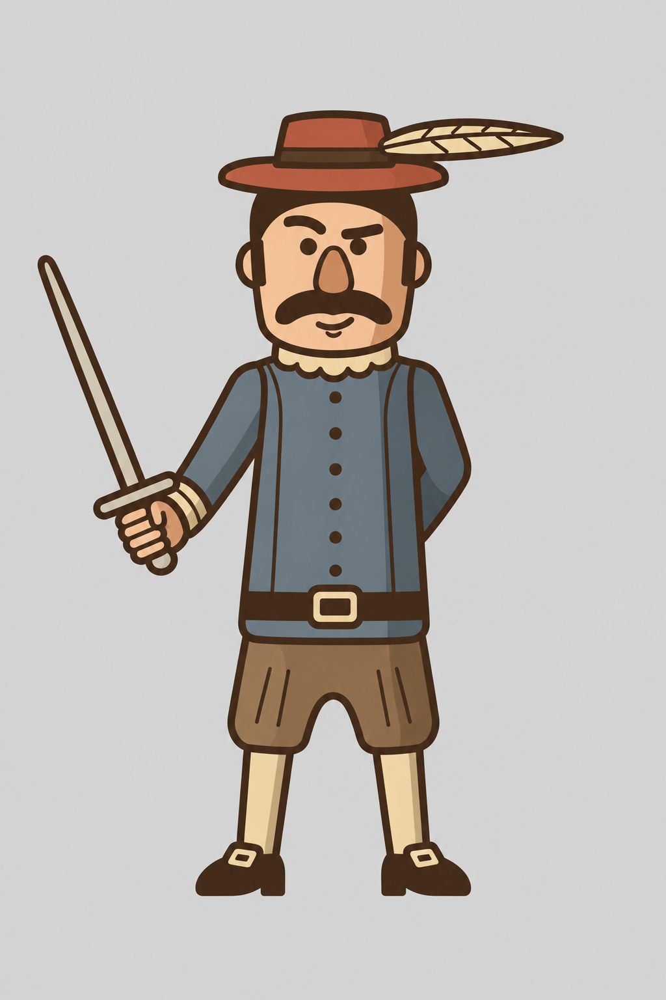
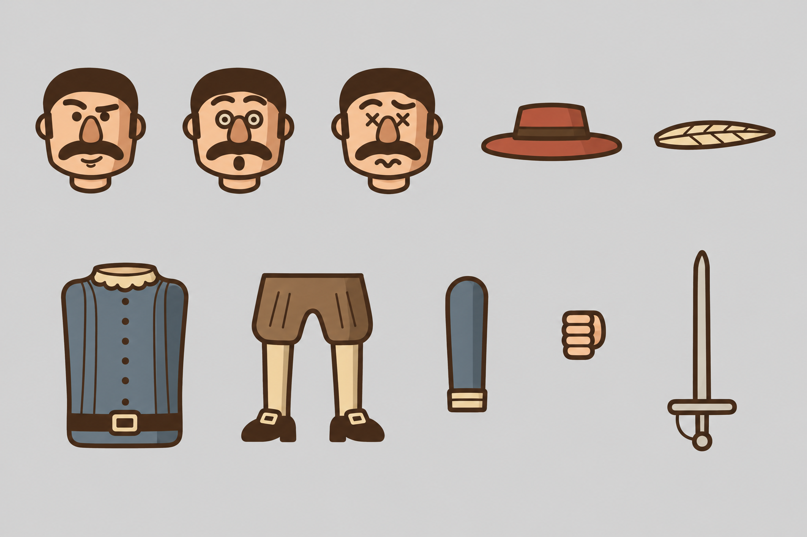
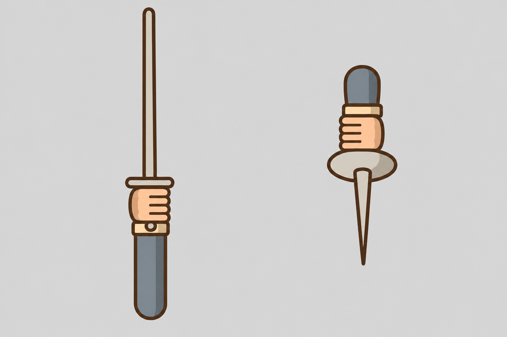
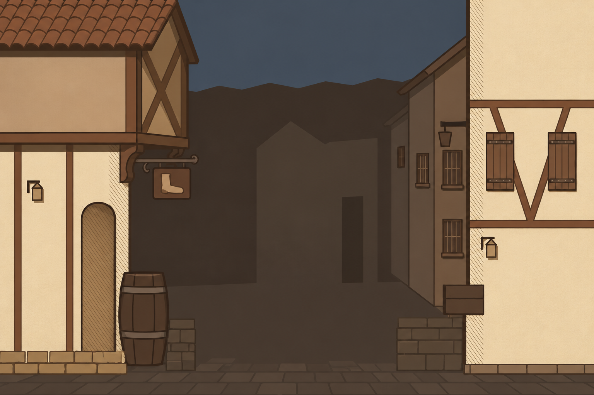
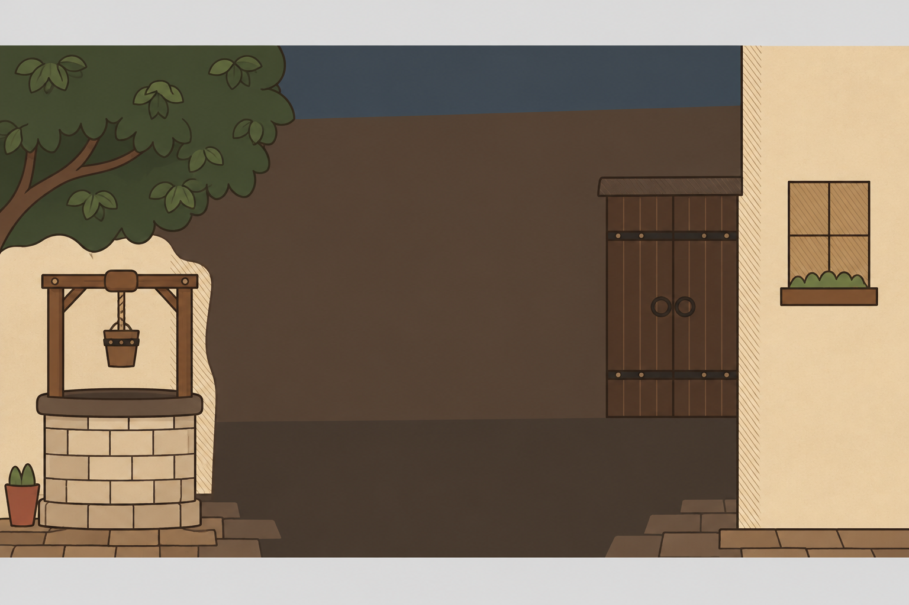
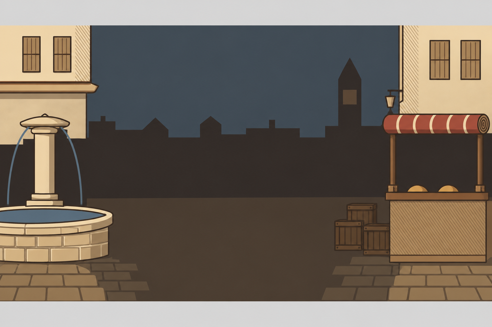
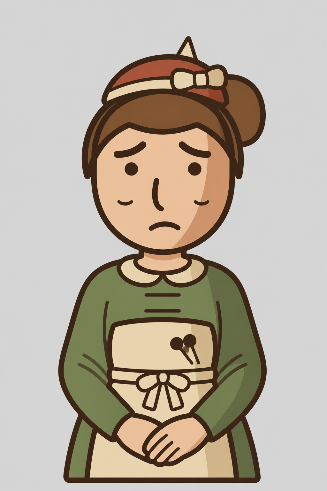
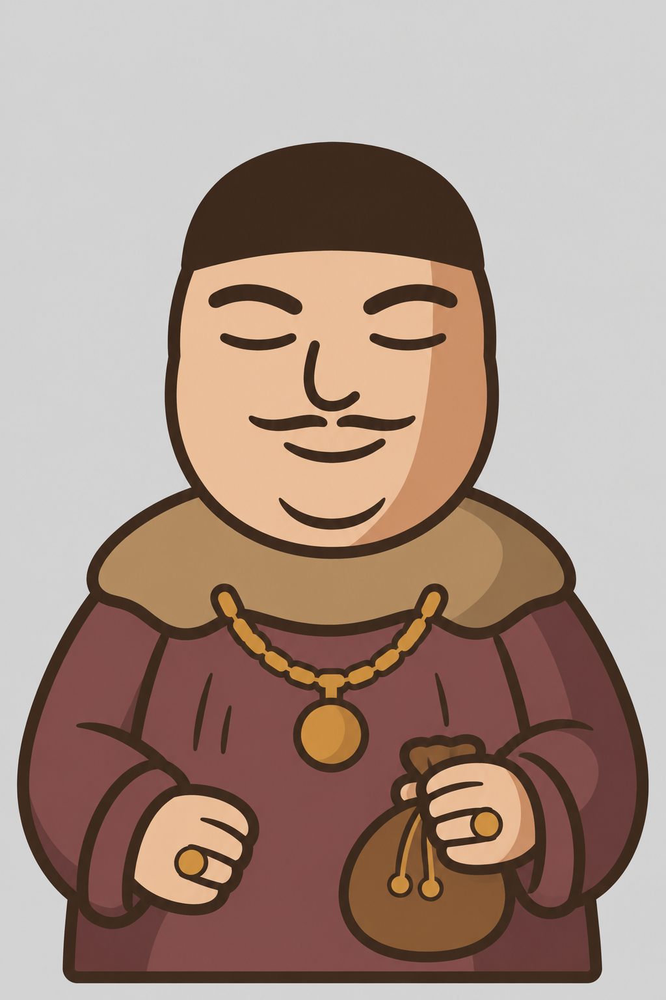

기준 그림 — 바르톨로
기준 그림 — 바르톨로 (2절)


bartolo-parts.png

1번 주먹의 그림자는 따르지 않는다(규칙은 오른쪽)
bartolo-arms.png
기준 그림 — 무대
기준 그림 — 무대 셋 (2·6절)

stage-alley.png

stage-court.png

stage-piazza.png
기준 그림 — 의뢰인과 SVG 기준
기준 그림 — 의뢰인 둘과 SVG 기준 넷 (2·4절)


그린 그림이 없는 기준은 SVG 견본이다.
022-mix.html — 섞은 SVG: 꼴과 디테일의 양, 결투 화면의 내 손·칼
020-bridge.html의 b-counter — 카운터 배경
025-type-ui-size.html — UI "나 · 필사본"과 글꼴 셋
026-pose-motion.html — 어깨 회전의 포즈와 hold 곡선
팔레트
팔레트 — 주는 값 (8절). 점선 칸은 기준 그림 bartolo-front에서 잰 값
한눈에
한눈에 — 먼저 지킬 열 줄
- 인물은 섞은 SVG만큼 단순하게, 둥근 모서리의 곧은 꼴로. 만듦새만 다듬고 디테일은 조금(4·13.1).
- 선은
#3B2A1E하나, 고른 굵기, 둥근 끝이고 그림자에는 선이 없다. 칠은 바랜 색으로 평평하고 그림자는 한 단계, 보는 쪽 오른쪽(빛은 왼쪽 위)(4). - 예비 동작은 관찰로 읽혀야 한다: 같은 공격은 늘 같은 궤적, 곡선이 예비 동작의 포즈를 덜 가게 하지 않고, 대기의 흔들림이 예비 동작처럼 보이지 않으며, 칼 팔이 머리를 가리지 않는다(11·15).
- 상대의 큰 면은 칠·그림자 Y ≥ 0.30, 선 Y < 0.22, S ≤ 50%. 주는 칠은 Y ≥ 0.42이고 그림자 hex도 준다(8·11).
- 신호색은 코드의 값이고 그림의 색은 신호 구역 밖이다(8).
- 게임 파츠는 머리·몸통이 엄격한 정면, 결정 12의 이름과 관절, 겹침 여유를 둔다(5·11).
- 무대 가운데의 조용한 구역에는 선과 물건이 없고, 극장으로 읽히지 않는다(6·11).
- UI는 "필사본"이고, UI의 어떤 선도 교전의 인물 바깥 선보다 굵지 않다(6·10).
- 새 그림은 우리 그림을 넣어 그리고, 고칠 때는 바탕 그림에 한 가지만 바꾼다. 좌우 뒤집기는 화소로(13.1·13.2).
- 생성은
gpt-6.2-sol·high·read-only, 돌리기 전에 장 수를 알리고, 이름과 참고 스크린샷을 넣지 않는다(3·13.5).
더 볼 곳: 바이블 13.3(그림마다의 블록), 13.6(판정 목록), 16절(4단계로 넘기는 것). 견본 025-type-ui-size.html의 ui-duel·ui-counter, 026-pose-motion.html의 pose-pair·motion-pair.